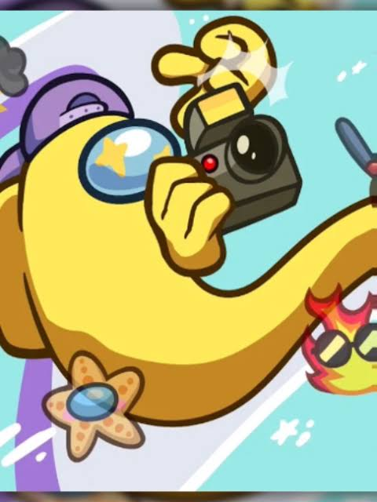
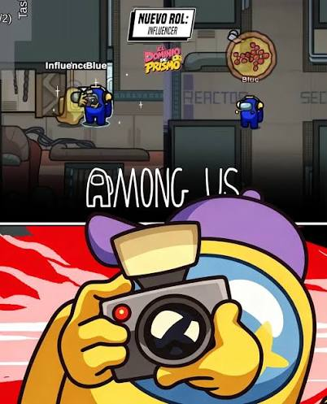

1. Historia, Contexto y Rol Operativo en la Misión
En un entorno espacial confinado donde el aislamiento sensorial y la desinformación constante amenazan con sumir a los astronautas en la histeria colectiva, la figura del Influencer surge como el aglutinador moral y el canalizador de la opinión pública. Dotado de un carisma natural y una retórica persuasiva entrenada para la mediación de conflictos en misiones de larga duración, este especialista opera como el portavoz oficial de la tripulación en los canales de comunicaciones generales.
El Influencer cuenta con acceso a frecuencias abiertas de radio secundarias que le permiten emitir directivas de trabajo y advertencias sobre zonas calientes de la nave. Cuando el pánico dispersa a los tripulantes en direcciones opuestas, el Influencer utiliza su peso dialéctico para concertar rutas de patrulla seguras, ordenar el cotejo de tareas en salas abiertas y evitar que los inocentes caigan en emboscadas individuales en las esquinas más oscuras de la estación.
A diferencia de los roles cuyas facultades desaparecen por completo en el momento del asesinato, la resonancia social del Influencer trasciende su integridad física. Su eliminación a manos de un impostor detona una onda de choque en los sistemas de telemetría: la tripulación entera es notificada de que su líder comunicativo ha caído, lo que desenmascara las intenciones de los saboteadores y desata una cacería implacable en la asamblea siguiente.
2. Análisis de Mecánicas, Transmisión de Red y Asambleas
El poder del Influencer radica en la persuasión social y la resonancia póstuma:
2.1. Transmisión de Red [Comunicaciones]
Enlaza terminales secundarias para enviar micro-alertas a sus compañeros, coordinando grupos y previniendo el aislamiento de miembros clave. Esta capacidad ejerce un impacto directo sobre la dinámica de supervivencia en la nave (Alcance: Frecuencia Inter-Módulos), obligando tanto a aliados como a adversarios a recalcular constantemente sus rutas de tránsito y tiempos de reacción.
2.2. Eco Póstumo [Legado Pasivo]
Al ser eliminado por un impostor, el sistema emite una notificación que marca la pérdida de la voz líder, desestabilizando los argumentos hostiles. Esta capacidad ejerce un impacto directo sobre la dinámica de supervivencia en la nave (Persistencia: Toda la Partida), obligando tanto a aliados como a adversarios a recalcular constantemente sus rutas de tránsito y tiempos de reacción.
2.3. Consenso de Asamblea [Voto Popular]
Su argumentación genera una atracción decisiva entre los tripulantes indecisos, permitiendo romper empates y dirigir la expulsión de impostores. Esta capacidad ejerce un impacto directo sobre la dinámica de supervivencia en la nave (Efecto: Alinea el voto colectivo), obligando tanto a aliados como a adversarios a recalcular constantemente sus rutas de tránsito y tiempos de reacción.
3. Ventajas Estratégicas y Puntos Vulnerables
3.1. Ventajas Operativas y Fortalezas Estratégicas
El despliegue eficiente de este rol aporta ventajas sustanciales que permiten maximizar el control del mapa y acelerar los objetivos del equipo:
- Ventaja táctica: Capacidad para cohesionar votos y evitar la dispersión en debates críticos.
- Ventaja táctica: Genera confianza inmediata entre los jugadores neutrales o desorientados.
- Ventaja táctica: Su muerte envía un mensaje inequívoco de peligro inminente al equipo.
- Ventaja táctica: Extraordinaria sinergia con el Juez y el Detective para respaldar pruebas.
3.2. Vulnerabilidades Críticas y Limitaciones Operativas
No obstante, el operador se encuentra sujeto a vulnerabilidades severas que los adversarios procurarán capitalizar en los momentos de mayor tensión:
- Punto vulnerable: Objetivo prioritario para los impostores que buscan quebrar la organización aliada.
- Punto vulnerable: Si confía en el testimonio falso de un Cambiaformas, arrastrará al grupo al error.
- Punto vulnerable: No posee habilidades de escape físico ni acceso a conductos de ventilación.
- Punto vulnerable: Depende de la receptividad y disciplina de los demás jugadores.
4. Estrategia Avanzada y Sociometría del Debate
4.1. El Círculo de Seguridad Pública
Mantente siempre acompañado de al menos un tripulante verificado con tarea visual. Los impostores saben que si te asesinan en solitario silenciarán al grupo; obligarlos a acercarse a ti en presencia de testigos es la mejor protección pasiva.
4.2. La Táctica de la Síntesis
Durante las discusiones caóticas donde tres personas acusan al mismo tiempo, toma el control con preguntas estructuradas: «¿Quién vio el cuerpo primero?», «¿Qué tareas se estaban realizando en reactor?». La tripulación responderá instintivamente a quien ponga orden en el desconcierto.
5. Perfil Operativo y Parámetros Técnicos
Desde la perspectiva de diseño lúdico y balance de juego estandarizado, este personaje se caracteriza por los siguientes parámetros oficiales normados:
- Facción: Tripulación.
- Tipo de Rol: Liderazgo / Debate.
- Ámbito Clave: Asambleas y Comms.
- Influencia: Alta / Cohesiva.
- Vulnerabilidad: Prioridad de Ataque.
- Dificultad: Intermedia.
6. Recursos Multimedia Obligatorios: Sonido y Vídeo
Señal de Transmisión de Megafonía
Frecuencia de emisión de alerta general y enlace de radio inter-módulos.
Vídeo Demostrativo del Influencer
Coordinación de la asamblea de votación y resolución del debate colectivo.
7. Archivos Gráficos y Evidencias Visuales

